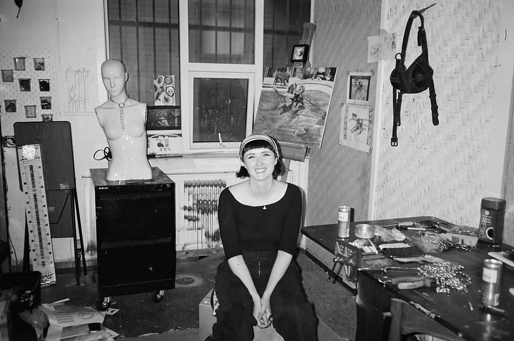

About Katie Grenville Artist

Katie Grenville (she/her) is a naughty naughty visual artist living and making in Manchester, United Kingdom.
Poly for practices, a slag for skills and a tart for trades
Katie work across many across medias. Short film, painting, performance, installation, drawing, sign writing, jewelry, clothing design, poetry, woodwork and digital. Through each of these disciplines, Katie explores themes of kitchiness, campness, sexual relationships, extremes of emotions, dark comedy and cult/pop culture references, and does so with a distinctly queer and radical-feminist viewpoint.
Quotes that are key to Katie's practice:
“I always want to be somewhere between 80% beautiful and 20% disgusting”
(Katya Zamolodchikova, RuPaul’s Drag Race, 2015)
"Shes a silly woman, doing silly things" - Brian Sewell on being asked what he thought of artist and legend Cornelia Parker.
"The horrors are unimaginable but you have got to slay" - unknown internet user
On the multidisciplinary nature of her practice:
"Making things, whether it is making is a wooden spoon, a short film, a piece of jewelry, a poem, cooking a meal, a chain a harness, a painting or a simple drawing, is an empowering and joyful thing.
To me, "making" encompasses all artistic practices and thereby delineates hierarchies within arts - "high and low" or "craft and fine art": they are all acts of making. The goal is to make, to seize the means of production, and in doing so empower ourselves with the knowledge of our abilities to be creators, and silly silly artists, full of the ability to make great things."
“Some ideas are films and some ideas are paintings”
(David Lynch, Lynch on Lynch, 1993)
Katie Grenville Studio Statement
Katie Grenville Studio operates as an ever growing collective of artists with a focus on showcasing queer talent.
Katie Grenville Studio operates as a shop in order to showcase and support artists but maintains fundamentally Anti-capitalist beliefs. As artists we need money to continue to practice however much we wish this wasn't the case. All sales made though Katie Grenville Studio help support artists to continue to create this is out sole goal in selling our works. Support the arts. Support small business. Support creatives. Support ethical consumption whenever possible.